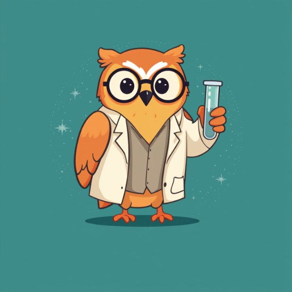

<!DOCTYPE html>
<html lang="ja">
<head>
<meta charset="UTF-8">
<meta name="viewport" content="width=device-width, initial-scale=1, viewport-fit=cover">
<title>男性更年期セルフチェック</title>
<link rel="stylesheet" href="https://fonts.googleapis.com/css2?family=Shippori+Mincho:wght@400;600;800&family=Zen+Kaku+Gothic+New:wght@400;500;700&display=swap">
<style>
  :root {
    --bg: #F3F5F7;
    --surface: #FFFFFF;
    --surface-2: #E7EBEF;
    --border: #D7DEE4;
    --text: #1B2430;
    --text-muted: #5C6773;
    --accent: #3A5AA6;
    --accent-contrast: #FFFFFF;
    --accent-soft: #E8EDF8;
    --scale-1: #2F8F6E;
    --scale-2: #8FA23A;
    --scale-3: #C79A2E;
    --scale-4: #D97A3D;
    --scale-5: #C4453A;
    --sev-none: #2F8F6E;
    --sev-mild: #B98F1F;
    --sev-moderate: #C56A2E;
    --sev-severe: #B8432F;
    --shadow: 0 1px 2px rgba(27,36,48,0.04), 0 8px 24px rgba(27,36,48,0.06);
    --radius: 14px;
  }
  @media (prefers-color-scheme: dark) {
    :root:not([data-theme="light"]) {
      --bg: #12161C;
      --surface: #1A2029;
      --surface-2: #232B36;
      --border: #2E3846;
      --text: #E7ECF1;
      --text-muted: #9AA7B4;
      --accent: #7C9CE8;
      --accent-contrast: #0E1420;
      --accent-soft: #202A3E;
      --scale-1: #4FB98F;
      --scale-2: #A8C158;
      --scale-3: #D4B144;
      --scale-4: #E08A4D;
      --scale-5: #E2604A;
      --sev-none: #4FB98F;
      --sev-mild: #D4B144;
      --sev-moderate: #E08A4D;
      --sev-severe: #E2604A;
      --shadow: 0 1px 2px rgba(0,0,0,0.3), 0 8px 24px rgba(0,0,0,0.35);
    }
  }
  :root[data-theme="dark"] {
    --bg: #12161C;
    --surface: #1A2029;
    --surface-2: #232B36;
    --border: #2E3846;
    --text: #E7ECF1;
    --text-muted: #9AA7B4;
    --accent: #7C9CE8;
    --accent-contrast: #0E1420;
    --accent-soft: #202A3E;
    --scale-1: #4FB98F;
    --scale-2: #A8C158;
    --scale-3: #D4B144;
    --scale-4: #E08A4D;
    --scale-5: #E2604A;
    --sev-none: #4FB98F;
    --sev-mild: #D4B144;
    --sev-moderate: #E08A4D;
    --sev-severe: #E2604A;
    --shadow: 0 1px 2px rgba(0,0,0,0.3), 0 8px 24px rgba(0,0,0,0.35);
  }

  * { box-sizing: border-box; }
  html, body { height: 100%; }
  body {
    margin: 0;
    background: var(--bg);
    color: var(--text);
    font-family: 'Zen Kaku Gothic New', 'Hiragino Kaku Gothic ProN', 'Yu Gothic', sans-serif;
    -webkit-font-smoothing: antialiased;
    text-wrap: pretty;
  }
  h1, h2, h3, .serif { font-family: 'Shippori Mincho', 'Hiragino Mincho ProN', 'Yu Mincho', serif; }
  .tnum { font-variant-numeric: tabular-nums; }

  .app {
    min-height: 100vh;
    display: flex;
    flex-direction: column;
    align-items: center;
    padding: clamp(16px, 4vw, 40px) clamp(14px, 4vw, 20px) 48px;
  }

  .topbar {
    width: 100%;
    max-width: 560px;
    margin-bottom: clamp(20px, 5vw, 36px);
  }
  .progress-track {
    height: 4px;
    background: var(--surface-2);
    border-radius: 999px;
    overflow: hidden;
  }
  .progress-fill {
    height: 100%;
    width: 0%;
    background: var(--accent);
    border-radius: 999px;
    transition: width 0.4s ease;
  }
  @media (prefers-reduced-motion: reduce) {
    .progress-fill { transition: none; }
  }

  .stage {
    width: 100%;
    max-width: 560px;
    flex: 1;
    display: flex;
    flex-direction: column;
  }

  .card {
    --card-pad: clamp(24px, 6vw, 40px);
    background: var(--surface);
    border: 1px solid var(--border);
    border-radius: var(--radius);
    box-shadow: var(--shadow);
    padding: var(--card-pad);
  }

  .card-banner {
    display: flex;
    aspect-ratio: 2 / 1;
    background: #3E8B89;
    margin: calc(var(--card-pad) * -1) calc(var(--card-pad) * -1) 22px;
    border-radius: var(--radius) var(--radius) 0 0;
    overflow: hidden;
  }
  .banner-owl {
    width: 50%;
    height: 100%;
    object-fit: cover;
    object-position: 50% 38%;
    display: block;
    flex-shrink: 0;
  }
  .banner-text {
    width: 50%;
    display: flex;
    flex-direction: column;
    justify-content: center;
    padding: 0 clamp(12px, 4vw, 28px);
    min-width: 0;
  }
  .banner-word {
    font-family: 'Shippori Mincho', 'Hiragino Mincho ProN', 'Yu Mincho', serif;
    font-weight: 700;
    font-size: clamp(1.3rem, 6vw, 2.4rem);
    color: #F4F2E8;
    margin: 0 0 8px;
    line-height: 1.15;
    text-wrap: balance;
  }
  .banner-rule {
    display: block;
    width: 44%;
    height: 4px;
    background: #C4872F;
    border-radius: 2px;
    margin-bottom: 10px;
  }
  .banner-tag {
    font-family: 'Zen Kaku Gothic New', 'Hiragino Kaku Gothic ProN', sans-serif;
    font-size: clamp(0.55rem, 2.2vw, 0.78rem);
    letter-spacing: 0.08em;
    color: #C9CFC2;
    margin: 0;
  }

  .view {
    animation: rise 0.36s ease both;
  }
  @keyframes rise {
    from { opacity: 0; transform: translateY(8px); }
    to { opacity: 1; transform: translateY(0); }
  }
  @media (prefers-reduced-motion: reduce) {
    .view { animation: none; }
  }

  /* ---- Start screen ---- */
  .eyebrow {
    font-size: 0.8rem;
    letter-spacing: 0.08em;
    color: var(--accent);
    font-weight: 700;
    margin: 0 0 10px;
  }
  .start-title {
    font-size: clamp(1.6rem, 5vw, 2.15rem);
    line-height: 1.4;
    margin: 0 0 18px;
    text-wrap: balance;
  }
  .start-lede {
    font-size: 1rem;
    line-height: 1.9;
    color: var(--text);
    margin: 0 0 20px;
  }
  .meta-row {
    display: flex;
    gap: 10px;
    flex-wrap: wrap;
    margin-bottom: 24px;
  }
  .meta-chip {
    display: inline-flex;
    align-items: center;
    gap: 6px;
    background: var(--surface-2);
    color: var(--text-muted);
    border-radius: 999px;
    padding: 7px 14px;
    font-size: 0.85rem;
  }
  .btn {
    display: inline-flex;
    align-items: center;
    justify-content: center;
    width: 100%;
    min-height: 52px;
    border-radius: 10px;
    border: none;
    font-family: inherit;
    font-size: 1rem;
    font-weight: 700;
    cursor: pointer;
    padding: 12px 20px;
    text-align: center;
    text-decoration: none;
    transition: transform 0.15s ease, filter 0.15s ease;
  }
  .btn:active { transform: scale(0.98); }
  .btn-primary {
    background: var(--accent);
    color: var(--accent-contrast);
  }
  .btn-primary:hover { filter: brightness(1.06); }
  .btn-outline {
    background: transparent;
    color: var(--text);
    border: 1.5px solid var(--border);
  }
  .btn-outline:hover { border-color: var(--accent); color: var(--accent); }

  .note-block {
    margin-top: 22px;
    font-size: 0.82rem;
    line-height: 1.75;
    color: var(--text-muted);
  }
  .note-block a { color: var(--text-muted); }

  /* ---- Question screen ---- */
  .q-head {
    display: flex;
    align-items: center;
    justify-content: space-between;
    margin-bottom: 6px;
  }
  .q-count {
    font-size: 0.85rem;
    color: var(--text-muted);
    font-weight: 500;
  }
  .back-link {
    background: none;
    border: none;
    color: var(--text-muted);
    font-family: inherit;
    font-size: 0.85rem;
    cursor: pointer;
    padding: 6px 0;
    visibility: hidden;
  }
  .back-link.show { visibility: visible; }
  .back-link:hover { color: var(--accent); }

  .q-text {
    font-size: clamp(1.2rem, 4.4vw, 1.5rem);
    line-height: 1.7;
    margin: 18px 0 28px;
    text-wrap: balance;
  }

  .choices {
    display: flex;
    flex-direction: column;
    gap: 10px;
  }
  .choice {
    position: relative;
    display: flex;
    align-items: center;
    gap: 14px;
    width: 100%;
    min-height: 56px;
    background: var(--surface-2);
    border: 1.5px solid transparent;
    border-radius: 10px;
    padding: 12px 18px 12px 16px;
    font-family: inherit;
    font-size: 0.98rem;
    font-weight: 500;
    color: var(--text);
    text-align: left;
    cursor: pointer;
    transition: border-color 0.15s ease, background 0.15s ease, transform 0.12s ease;
  }
  .choice:hover { border-color: var(--accent); }
  .choice:active { transform: scale(0.99); }
  .choice-dot {
    width: 10px;
    height: 10px;
    border-radius: 50%;
    flex-shrink: 0;
    background: var(--dot-color);
  }

  /* ---- Result screen ---- */
  .result-kicker {
    font-size: 0.85rem;
    color: var(--text-muted);
    margin: 0 0 8px;
  }
  .result-badge {
    display: inline-flex;
    align-items: center;
    gap: 8px;
    background: var(--badge-soft);
    color: var(--badge-color);
    border-radius: 999px;
    padding: 7px 16px;
    font-size: 0.88rem;
    font-weight: 700;
    margin-bottom: 20px;
  }
  .result-badge::before {
    content: '';
    width: 8px;
    height: 8px;
    border-radius: 50%;
    background: var(--badge-color);
  }
  .score-row {
    display: flex;
    align-items: baseline;
    gap: 10px;
    margin-bottom: 22px;
  }
  .score-num {
    font-size: clamp(3rem, 14vw, 4rem);
    font-weight: 800;
    line-height: 1;
  }
  .score-unit {
    font-size: 1rem;
    color: var(--text-muted);
  }
  .score-max {
    font-size: 0.95rem;
    color: var(--text-muted);
  }

  .gauge {
    position: relative;
    height: 10px;
    border-radius: 999px;
    overflow: hidden;
    background: linear-gradient(to right,
      var(--sev-none) 0%, var(--sev-none) var(--b1),
      var(--sev-mild) var(--b1), var(--sev-mild) var(--b2),
      var(--sev-moderate) var(--b2), var(--sev-moderate) var(--b3),
      var(--sev-severe) var(--b3), var(--sev-severe) 100%);
    margin-bottom: 10px;
  }
  .gauge-marker {
    position: absolute;
    top: -4px;
    width: 3px;
    height: 18px;
    background: var(--text);
    border-radius: 2px;
    left: var(--pos);
    transform: translateX(-1.5px);
  }
  .gauge-ticks {
    position: relative;
    height: 16px;
    margin-bottom: 4px;
  }
  .gauge-ticks span {
    position: absolute;
    top: 4px;
    transform: translateX(-50%);
    font-size: 0.68rem;
    color: var(--text-muted);
    white-space: nowrap;
  }
  .gauge-ticks span::before {
    content: '';
    position: absolute;
    left: 50%;
    top: -4px;
    width: 1px;
    height: 4px;
    background: var(--border);
    transform: translateX(-50%);
  }
  .gauge-labels {
    position: relative;
    height: 16px;
    font-size: 0.72rem;
    font-weight: 500;
    color: var(--text-muted);
    margin-bottom: 26px;
  }
  .gauge-labels span {
    position: absolute;
    top: 0;
    transform: translateX(-50%);
    white-space: nowrap;
  }

  .result-desc {
    font-size: 1rem;
    line-height: 1.9;
    margin: 0 0 28px;
  }

  .cta-stack {
    display: flex;
    flex-direction: column;
    gap: 10px;
    margin-bottom: 8px;
  }

  .note-intro {
    font-size: 0.92rem;
    line-height: 1.8;
    margin: 0 0 14px;
  }
  .note-card {
    display: block;
    background: var(--surface-2);
    border-radius: 12px;
    overflow: hidden;
    text-decoration: none;
    color: var(--text);
    margin-bottom: 8px;
    transition: transform 0.15s ease;
  }
  .note-card:hover { transform: translateY(-1px); }
  .note-card-img {
    display: block;
    width: 100%;
    aspect-ratio: 1.91 / 1;
    object-fit: cover;
    background: var(--border);
  }
  .note-card-body {
    padding: 14px 16px 16px;
  }
  .note-card-eyebrow {
    font-size: 0.7rem;
    letter-spacing: 0.04em;
    color: var(--text-muted);
    margin: 0 0 6px;
  }
  .note-card-title {
    font-size: 0.98rem;
    font-weight: 700;
    line-height: 1.6;
    margin: 0 0 10px;
    text-wrap: balance;
  }
  .note-card-cta {
    display: inline-flex;
    align-items: center;
    gap: 4px;
    font-size: 0.82rem;
    font-weight: 700;
    color: var(--accent);
  }

  .affiliate-section {
    margin-top: 32px;
    padding-top: 26px;
    border-top: 1px solid var(--border);
  }
  .affiliate-heading {
    font-size: 0.95rem;
    font-weight: 700;
    margin: 0 0 4px;
  }
  .affiliate-sub {
    font-size: 0.8rem;
    color: var(--text-muted);
    margin: 0 0 16px;
  }
  .affiliate-grid {
    display: flex;
    flex-direction: column;
    gap: 12px;
  }
  .affiliate-card {
    display: flex;
    gap: 14px;
    background: var(--surface-2);
    border-radius: 10px;
    padding: 14px;
    text-decoration: none;
    color: var(--text);
  }
  .affiliate-img {
    width: 64px;
    height: 64px;
    border-radius: 8px;
    object-fit: cover;
    flex-shrink: 0;
    background: var(--border);
  }
  .affiliate-name {
    font-size: 0.92rem;
    font-weight: 700;
    margin: 0 0 4px;
  }
  .affiliate-desc {
    font-size: 0.82rem;
    color: var(--text-muted);
    line-height: 1.6;
    margin: 0;
  }
  .affiliate-disclaimer {
    font-size: 0.72rem;
    color: var(--text-muted);
    margin-top: 10px;
  }

  .disclaimer {
    margin-top: 28px;
    padding: 16px 18px;
    background: var(--surface-2);
    border-radius: 10px;
    font-size: 0.78rem;
    line-height: 1.8;
    color: var(--text-muted);
  }
  .disclaimer a { color: var(--text-muted); }

  .restart-row {
    text-align: center;
    margin-top: 22px;
  }
  .restart-link {
    background: none;
    border: none;
    color: var(--text-muted);
    font-family: inherit;
    font-size: 0.85rem;
    cursor: pointer;
    text-decoration: underline;
  }
  .restart-link:hover { color: var(--accent); }

  :focus-visible {
    outline: 2px solid var(--accent);
    outline-offset: 2px;
  }
</style>
</head>
<body>

<div class="app">
  <div class="topbar">
    <div class="progress-track"><div class="progress-fill" id="progressFill"></div></div>
  </div>
  <div class="stage" id="stage"></div>
</div>

<script>
  /* ============================================================
     編集ガイド（公開前にここだけ書き換えればOK）
     - xUrl: Xのプロフィール等のURL。空文字なら結果画面に出ません
     - RESULT_CONTENT: 診断カテゴリ（none/mild/moderate/severe）ごとに
       ・note: 誘導したい記事（url / title / image=見出し画像URL）
       ・intro: 記事へ誘導する一言（結果に応じた案内文）
       ・products: 紹介したい商品の配列。空配列なら紹介欄ごと非表示になります。
         1件の例: { name: '商品名', description: '説明文', url: 'https://example.com/?affid=xxx' }
       ※商品紹介文は薬機法・景品表示法の対象です。「治る」「改善する」等の断定表現は
         避け、PR表記が必要な場合は明記してください。
     ============================================================ */
  const CONFIG = {
    xUrl: ''
  };

  const RESULT_CONTENT = {
    none: {
      note: {
        url: 'https://note.com/ko_nenki_men/n/na1ff2ec485cc?sub_rt=share_sb',
        title: 'AMSチェック結果「症状なし」の方へ ― 今のうちにできること',
        image: 'https://assets.st-note.com/production/uploads/images/311028652/rectangle_large_type_2_3f364bc3cb4ce4916de85fa87342495c.png?fit=bounds&quality=85&width=1280'
      },
      intro: '同じ「症状なし」の結果だった方に向けて、今のうちにできることをまとめた記事があります。',
      productsIntro: 'あわせて、日々のコンディションづくりに選ばれている製品はこちらです。',
      products: [
        { name: 'ネイチャーメイド スーパーマルチビタミン&ミネラル', description: '毎日の栄養バランスを手軽に整えたい方に選ばれているマルチビタミン&ミネラルです。', url: 'https://amzn.to/4ibc8wZ' }
      ]
    },
    mild: {
      note: {
        url: 'https://note.com/ko_nenki_men/n/n8286e0f9a813?sub_rt=share_sb',
        title: 'AMSチェック結果「軽度」の方へ ― 今日から始める、小さな一歩',
        image: 'https://assets.st-note.com/production/uploads/images/311031276/rectangle_large_type_2_ef6e07b7ddf572069f13a8378d26531a.png?fit=bounds&quality=85&width=1280'
      },
      intro: '「軽度」の結果だった方に向けて、今日から始められる小さな一歩をまとめた記事があります。',
      productsIntro: 'あわせて、この結果の方に選ばれている製品はこちらです。',
      products: [
        { name: 'health＋ マグネシウムサプリ', description: '日々のコンディションづくりにマグネシウムを取り入れたい方向けのサプリメントです。', url: 'https://amzn.to/4xlItFm' },
        { name: 'キューピーコーワ ヒーリング錠', description: 'ビタミンB群などを配合した、疲れが気になるときの栄養補給に使われている製品です。', url: 'https://amzn.to/4gFIxKP' }
      ]
    },
    moderate: {
      note: {
        url: 'https://note.com/ko_nenki_men/n/nec3e9f7ef3f0?sub_rt=share_sb',
        title: 'AMSチェック結果「中等度」の方へ ― まず、数値で確かめてみませんか',
        image: 'https://assets.st-note.com/production/uploads/images/311032408/rectangle_large_type_2_0a56c605dfa790d9fa33010ede9be4f1.png?fit=bounds&quality=85&width=1280'
      },
      intro: '「中等度」の結果だった方には、まず数値で状態を確かめる方法をご紹介しています。',
      productsIntro: '自宅で目安を調べたい方には、こんな検査キットもあります。',
      products: [
        { name: '唾液でできる男性更年期検査キット（テストステロン）', description: '自宅で唾液を採取し、テストステロン値の目安を調べられる検査キットです。結果はあくまで目安のため、詳しい判断は医療機関にご相談ください。', url: 'https://amzn.to/46IkaX3' }
      ]
    },
    severe: {
      note: {
        url: 'https://note.com/ko_nenki_men/n/nff9d1fa5fef1?sub_rt=share_sb',
        title: 'AMSチェック結果「重度」の方へ ― まず、医療機関にご相談ください',
        image: 'https://assets.st-note.com/production/uploads/images/311032931/rectangle_large_type_2_de71994b9f7deb0360f3802cc80c8d67.png?fit=bounds&quality=85&width=1280'
      },
      intro: '「重度」の結果が出た方に向けて、次にとるべき行動をまとめた記事があります。',
      productsIntro: '',
      products: []
    }
  };

  const QUESTIONS = [
    '肉体的にも精神的にも調子が悪い',
    '関節や筋肉に痛みがある（腰痛・関節痛など）',
    '発汗・のぼせ',
    '眠れない、眠りが浅い',
    'よく眠くなるし、しばしば疲れを感じる',
    'いらいらする、不機嫌になる',
    '神経質になった',
    '不安になりやすい',
    'やる気がない、無気力、疲労感が取れない',
    '筋力の低下',
    '憂うつな気分、無力感',
    '自分のピークは過ぎたと感じる',
    '燃え尽きたと感じる、どん底の状態だと感じる',
    '髭の伸びが遅くなった',
    '性的能力の衰え',
    '朝立ちの回数が減少した',
    '性欲の低下'
  ];

  const CHOICES = [
    { label: 'とくに気にならない', value: 1 },
    { label: 'たまに気になる', value: 2 },
    { label: 'ときどき気になる', value: 3 },
    { label: 'よく気になる', value: 4 },
    { label: 'いつも気になる', value: 5 }
  ];

  const SCALE_VARS = ['--scale-1', '--scale-2', '--scale-3', '--scale-4', '--scale-5'];

  const RESULT_META = {
    none: {
      label: 'なし',
      range: '17〜26点',
      color: 'var(--sev-none)',
      soft: 'color-mix(in srgb, var(--sev-none) 16%, transparent)',
      desc: 'AMSスコア上は、目立った症状は見られません。これまでの生活習慣を続けていきましょう。'
    },
    mild: {
      label: '軽度',
      range: '27〜36点',
      color: 'var(--sev-mild)',
      soft: 'color-mix(in srgb, var(--sev-mild) 16%, transparent)',
      desc: 'AMSスコアは軽度の範囲です。食事や運動など生活習慣に気を配りながら、無理のない範囲で過ごしましょう。'
    },
    moderate: {
      label: '中等度',
      range: '37〜49点',
      color: 'var(--sev-moderate)',
      soft: 'color-mix(in srgb, var(--sev-moderate) 16%, transparent)',
      desc: 'AMSスコアは中等度の範囲です。症状が続く場合は、医療機関（泌尿器科・メンズヘルス外来など）への相談をご検討ください。'
    },
    severe: {
      label: '重度',
      range: '50点以上',
      color: 'var(--sev-severe)',
      soft: 'color-mix(in srgb, var(--sev-severe) 16%, transparent)',
      desc: 'AMSスコアは重度の範囲です。日常生活に支障が出ている可能性があります。早めに医療機関への相談をおすすめします。'
    }
  };

  const SCORE_MIN = 17;
  const SCORE_MAX = 85;

  const state = {
    screen: 'start',
    qIndex: 0,
    answers: new Array(QUESTIONS.length).fill(null)
  };

  const stage = document.getElementById('stage');
  const progressFill = document.getElementById('progressFill');

  function setProgress(ratio) {
    progressFill.style.width = (ratio * 100) + '%';
  }

  function categoryFromScore(score) {
    if (score <= 26) return 'none';
    if (score <= 36) return 'mild';
    if (score <= 49) return 'moderate';
    return 'severe';
  }

  function render() {
    if (state.screen === 'start') renderStart();
    else if (state.screen === 'question') renderQuestion();
    else renderResult();
  }

  function renderStart() {
    setProgress(0);
    stage.innerHTML = `
      <div class="card view">
        <div class="card-banner">
          
          <div class="banner-text">
            <p class="banner-word">更年期ラボ</p>
            <span class="banner-rule"></span>
            <p class="banner-tag">AMS SCORE SELF CHECK</p>
          </div>
        </div>
        <p class="eyebrow">AMSスコア セルフチェック</p>
        <h1 class="start-title serif">男性更年期<br>セルフチェック</h1>
        <p class="start-lede">「なんとなく調子が悪い」「やる気が出ない」「以前より元気がない」——それ、更年期（LOH症候群）のサインかもしれません。厚生労働省の資料で紹介されているAMSスコア（男性更年期障害質問票）にもとづき、17の質問に答えるだけで今の状態をセルフチェックできます。</p>
        <div class="meta-row">
          <span class="meta-chip">全17問</span>
          <span class="meta-chip">所要時間 約2分</span>
          <span class="meta-chip">1問ずつ回答</span>
        </div>
        <button class="btn btn-primary" id="startBtn">チェックをはじめる</button>
        <p class="note-block">本チェックは医学的診断ではありません。結果はご自身の状態を知るための目安としてご活用ください。<br>出典：<a href="https://www.mhlw.go.jp/stf/seisakunitsuite/bunya/kenkou_iryou/kenkou/undou/index_00009.html" target="_blank" rel="noopener">厚生労働省「更年期症状・障害に関する意識調査」</a></p>
      </div>
    `;
    document.getElementById('startBtn').addEventListener('click', () => {
      state.screen = 'question';
      state.qIndex = 0;
      render();
    });
  }

  function renderQuestion() {
    const i = state.qIndex;
    setProgress(i / QUESTIONS.length);
    stage.innerHTML = `
      <div class="card view">
        <div class="q-head">
          <button class="back-link ${i > 0 ? 'show' : ''}" id="backBtn">← 戻る</button>
          <span class="q-count tnum">質問 ${i + 1} / ${QUESTIONS.length}</span>
        </div>
        <p class="q-text">${QUESTIONS[i]}</p>
        <div class="choices">
          ${CHOICES.map((c, idx) => `
            <button class="choice" data-value="${c.value}" style="--dot-color:${'var(' + SCALE_VARS[idx] + ')'}">
              <span class="choice-dot"></span>${c.label}
            </button>
          `).join('')}
        </div>
      </div>
    `;
    if (i > 0) {
      document.getElementById('backBtn').addEventListener('click', () => {
        state.qIndex -= 1;
        render();
      });
    }
    stage.querySelectorAll('.choice').forEach(btn => {
      btn.addEventListener('click', () => {
        state.answers[i] = Number(btn.dataset.value);
        if (i + 1 < QUESTIONS.length) {
          state.qIndex += 1;
          render();
        } else {
          state.screen = 'result';
          render();
        }
      });
    });
  }

  function renderResult() {
    setProgress(1);
    const score = state.answers.reduce((sum, v) => sum + v, 0);
    const catKey = categoryFromScore(score);
    const meta = RESULT_META[catKey];

    const b1 = ((26 - SCORE_MIN) / (SCORE_MAX - SCORE_MIN)) * 100;
    const b2 = ((36 - SCORE_MIN) / (SCORE_MAX - SCORE_MIN)) * 100;
    const b3 = ((49 - SCORE_MIN) / (SCORE_MAX - SCORE_MIN)) * 100;
    const pos = ((score - SCORE_MIN) / (SCORE_MAX - SCORE_MIN)) * 100;

    // 各カテゴリ名は自分の色帯の中央に、区切り点数はその境界線上に配置する
    const labelMid1 = b1 / 2;
    const labelMid2 = (b1 + b2) / 2;
    const labelMid3 = (b2 + b3) / 2;
    const labelMid4 = (b3 + 100) / 2;

    const content = RESULT_CONTENT[catKey];
    const products = content.products || [];
    const affiliateHtml = products.length ? `
      <div class="affiliate-section">
        <p class="affiliate-heading">気になる方へ</p>
        <p class="affiliate-sub">${content.productsIntro}</p>
        <div class="affiliate-grid">
          ${products.map(p => `
            <a class="affiliate-card" href="${p.url}" target="_blank" rel="noopener sponsored">
              ${p.imageUrl ? `` : `<div class="affiliate-img"></div>`}
              <div>
                <p class="affiliate-name">${p.name}</p>
                <p class="affiliate-desc">${p.description}</p>
              </div>
            </a>
          `).join('')}
        </div>
        <p class="affiliate-disclaimer">PR・広告を含みます。効果には個人差があります。</p>
      </div>
    ` : '';

    stage.innerHTML = `
      <div class="card view">
        <p class="result-kicker">あなたのチェック結果</p>
        <span class="result-badge" style="--badge-color:${meta.color};--badge-soft:${meta.soft}">AMSスコア判定：${meta.label}</span>
        <div class="score-row">
          <span class="score-num tnum">${score}</span>
          <span class="score-unit">点</span>
          <span class="score-max tnum">/ 85点（${meta.range}）</span>
        </div>
        <div class="gauge" style="--b1:${b1}%;--b2:${b2}%;--b3:${b3}%">
          <div class="gauge-marker" style="--pos:${pos}%"></div>
        </div>
        <div class="gauge-ticks tnum">
          <span style="left:${b1}%">26</span>
          <span style="left:${b2}%">36</span>
          <span style="left:${b3}%">49</span>
        </div>
        <div class="gauge-labels">
          <span style="left:${labelMid1}%">なし</span>
          <span style="left:${labelMid2}%">軽度</span>
          <span style="left:${labelMid3}%">中等度</span>
          <span style="left:${labelMid4}%">重度</span>
        </div>
        <p class="result-desc">${meta.desc}</p>
        <p class="note-intro">${content.intro}</p>
        <a class="note-card" href="${content.note.url}" target="_blank" rel="noopener">
          
          <div class="note-card-body">
            <p class="note-card-eyebrow">更年期ラボ</p>
            <p class="note-card-title">${content.note.title}</p>
            <span class="note-card-cta">続きを読む →</span>
          </div>
        </a>
        ${CONFIG.xUrl ? `<div class="cta-stack"><a class="btn btn-outline" href="${CONFIG.xUrl}" target="_blank" rel="noopener">Xでフォローする</a></div>` : ''}
        ${affiliateHtml}
        <div class="disclaimer">
          本チェックは、厚生労働省「更年期症状・障害に関する意識調査」で紹介されているAMSスコア（男性更年期障害質問票、出典：日本泌尿器科学会／日本Men's Health医学会「LOH症候群診療ガイドライン」検討ワーキング委員会『加齢男性性腺機能低下症候群診療の手引き』）にもとづく自己採点です。医学的な診断ではなく、更年期障害の診断はAMSスコアに加えて医師の診察によって行われます。症状が続く場合や日常生活に支障がある場合は、医療機関を受診してください。
          <br><a href="https://www.mhlw.go.jp/stf/seisakunitsuite/bunya/kenkou_iryou/kenkou/undou/index_00009.html" target="_blank" rel="noopener">出典を見る（厚生労働省）</a>
        </div>
        <div class="restart-row">
          <button class="restart-link" id="restartBtn">もう一度チェックする</button>
        </div>
      </div>
    `;
    document.getElementById('restartBtn').addEventListener('click', () => {
      state.screen = 'start';
      state.qIndex = 0;
      state.answers = new Array(QUESTIONS.length).fill(null);
      render();
    });
  }

  render();
</script>
</body>
</html>
